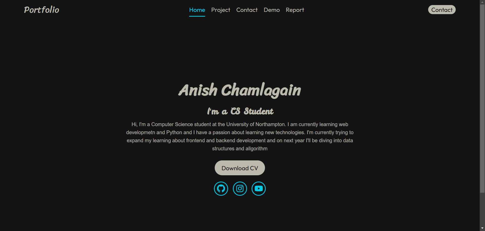

For Web development assignment I created a personal portfolio website. I learned soo many thing while working on this project. This was my first project for web development and was buzzing to see how it turned out
For Software Engineering Fundamental I was needed to create a application for Claybrook zoo. I was teamed up with my helpful friend and we created this application together and while doing this project I learned how to work on group
I don't think anyone know who is the real creater of Facebook. Everyone is brainwashed into thinking it was Mark Zuckerberg but the truth is it wasn't him it was me
I don't think anyone know who is the real creater of Facebook. Everyone is brainwashed into thinking it was Kevin Systrom and Mike Krieger but the truth is it wasn't them it was me